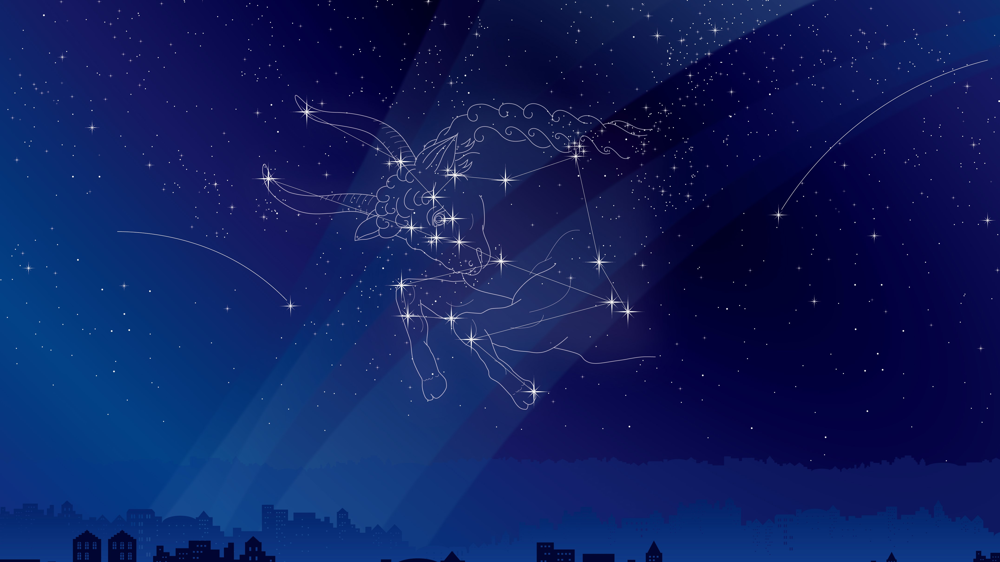
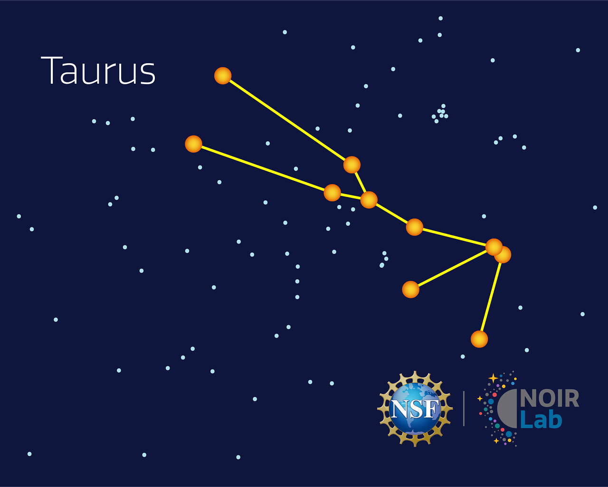
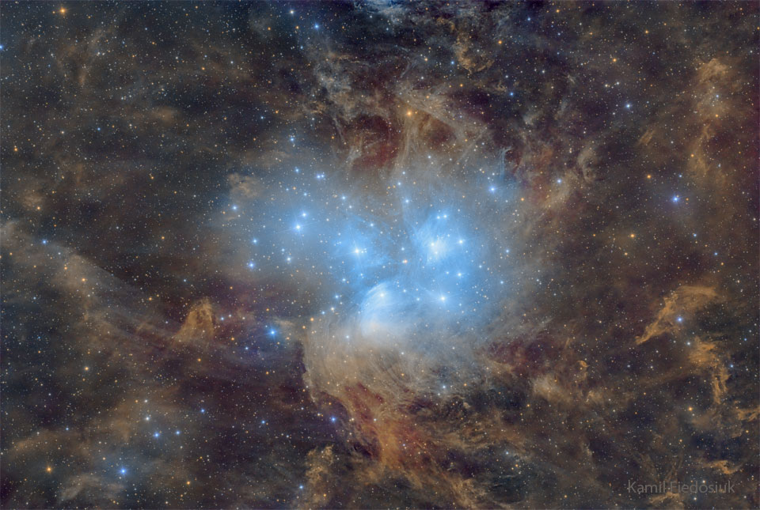

Taurus
Taurus is the 17th largest constellation
Taurus
Taurus is one of the zodiacs
- Taurus:
- 1. Aldebaran
- 2. Elnath
- 3. Alcyone
- 4. θ Tauri
- 5. γ Tauri (Hyadum I)
- 6. δ Tauri
- 7. ε Tauri (Ain)
- 8. ζ Tauri
- 9. λ Tauri
- 10. T Tauri
-
The "Pleiades" Stars (M45):
- Alcyone
- Atlas (27 Tauri)
- Pleione (28 Tauri)
- Maia (20 Tauri)
- Electra (17 Tauri)
- Taygeta (19 Tauri)
- Calaeno (16 Tauri)
- Sterope/ Asterope (21 & 22 Tauri)
- Merope (23 Tauri)
-
The Hyades Cluster:
- θ Tauri
- γ Tauri (Hyadum I)
- δ Tauri
- ε Tauri (Ain)
-
Famous Deepsky objects
- M1, NGC 1952 (The Crab Nebula)
- The Pleiades (M45)
- NGC 1555 (Hind's Variable Nebula)
- NGC 1514 (The Crystal Ball Nebula)
- NGC 1410 & NGC 1409
- IC 1995

By Noirlabs -
https://noirlab.edu/public/es/education/constellations/taurus,
Credit: E. Slawik/NOIRLab/NSF/AURA/M. Zamani
Credit: E. Slawik/NOIRLab/NSF/AURA/M. Zamani


Taurus - Foundational Data
- Rank: 17th largest Constellation
- Area: 797 square degrees
- Brightest Star: Aldebaran - 14th brightest in night sky
- Best Visible: November - January
- Zodiac Position: May 13- June 21
- Neighbours: Aries, Perseus, Auriga, Gemini, Orion, Eridanus, Cetus
- ε Tauri (Ain) has a confirmed gas giant (Ain b)
- Hyades cluster is the Nearest open cluster to Earth


Deep Space Objects
Deep Space Objects in Taurus
Crab Nebula (M1, NGC 1952)
Pleiades (M45)
showing 36 stars, including the 7 brightest ones and many dim
stars that are unable to view by the naked eye.


By Credit Line and Copyright Adam Block/Mount Lemmon
SkyCenter/University of Arizona -
http://www.caelumobservatory.com/gallery/n1555.shtml, CC BY-SA 3.0 us,
https://commons.wikimedia.org/w/index.php?curid=20594090.
Hind's Variable Nebula (NGC 1555)
NGC 1514
.jpg)
By Göran Nilsson & The Liverpool Telescope - Own work, CC BY-SA
4.0,
https://commons.wikimedia.org/w/index.php?curid=63316962.

By NASA, William C. Keel (University of Alabama, Tuscaloosa) -
http://hubblesite.org/newscenter/archive/releases/2001/02/, Public Domain,
https://commons.wikimedia.org/w/index.php?curid=1345318.
NGC 1409 & NGC 1410
- Ra: 03h 41m 10.7s
- Dec: −01° 17′ 55″
- Notable Features: A Lenticular Galaxy, A Seyfert Galaxy
- Other Designations: III Zw 55, NGC 1410, UGC 2821, PGC 13556
NGC 1410:
- Ra: 03h 41m 10.546s
- Dec: −01° 18′ 10.12″
- Notable Features: A Barred Lenticular Galaxy
- Other Designations: NGC 1409, UGC 2821, PGC 13553
NGC 1409:
LBN 777


By John Stauffer (Spitzer Science Center, Caltech)credits: Credit:
NASA/JPL-Caltech/J. Stauffer (SSC/Caltech) -
http://gallery.spitzer.caltech.edu/Imagegallery/image.php?image_name=ssc2007-07a, Public Domain,
https://commons.wikimedia.org/w/index.php?curid=1939861.
NGC 1435
Taurus molecular cloud (TMC-1)


By NASA, ESA, and STScI -
https://www.spacetelescope.org/images/heic1309c/, CC BY-SA 4.0,
https://commons.wikimedia.org/w/index.php?curid=61301846.